Privacy note: All student and staff names have been replaced with anonymized identifiers.
This report is intended for internal policy and administrative review only.
Executive Summary
Peer Tutoring (Theme 4: Self-Regulated & Peer-Assisted Learning) accounts for 6,080 of 13,383 sessions (45%) and 765 unique students — it operates at a very different scale from teacher-led services and is reported separately.
Teacher-led services delivered 7,303 sessions to 326 unique students across 6 programmes, spanning Themes 1–3 (literacy, intercultural communication, academic/professional communication).
Total recorded service time is 2,920.5 hours (where duration data is available).
13383
Total Sessions
1054
Unique Students
282
Unique Teachers/Tutors
2920.5
Total Service Hours
Mar 2023 – Jul 2025
Date Range
Programme KPI Summary
Programme
Sessions
Unique Students
Service Hours
Courses and Workshops
5,750
5
0.0
AWSALL
306
111
306.0
EID
0
0
0.0
LLO
241
21
44.0
ERPP
16
16
63.5
SLS
167
122
0.0
SWES
823
54
2,507.0
Peer Tutoring
6,080
765
0.0
LEP Strategic Theme Summary
Strategic Theme
Sessions
Unique Students
Service Hours
1. Advanced Literacy & Multilingual
6,573
59
2,507.0
4. Self-Regulated & Peer-Assisted Learning
6,080
765
0.0
3. Academic & Professional Communication
563
146
413.5
2. Interpersonal & Cultural Competency
167
122
0.0
Sessions by Service Category and Academic Year
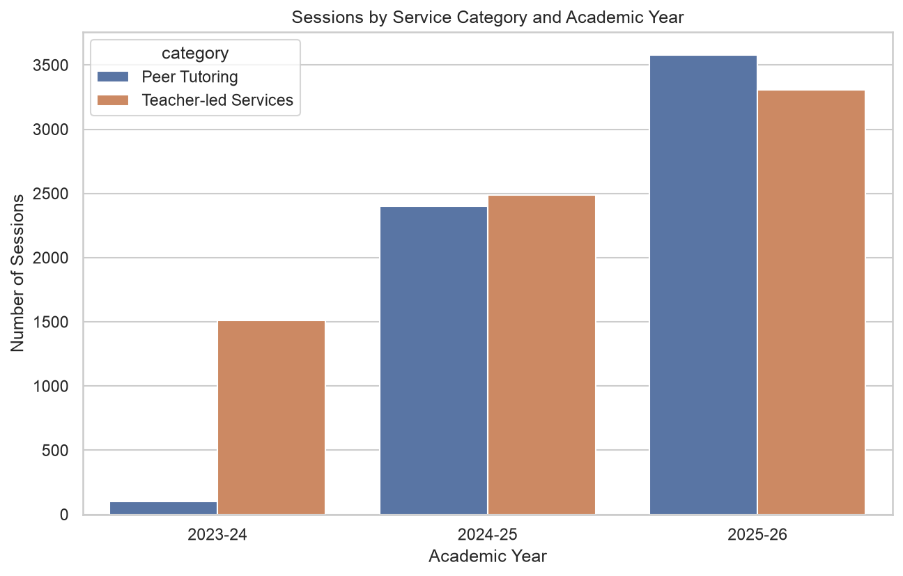
Sessions by LEP Strategic Theme and Academic Year
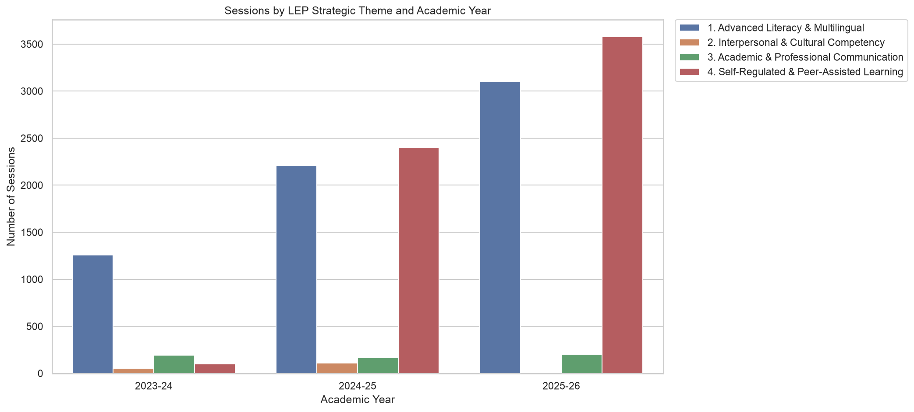
Sessions Over Time
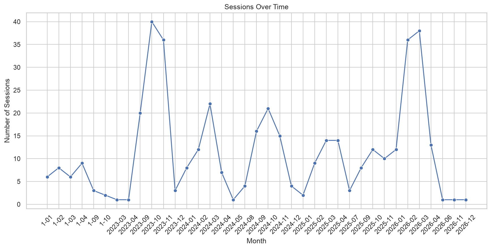
Sessions Heatmap: Programme × Month
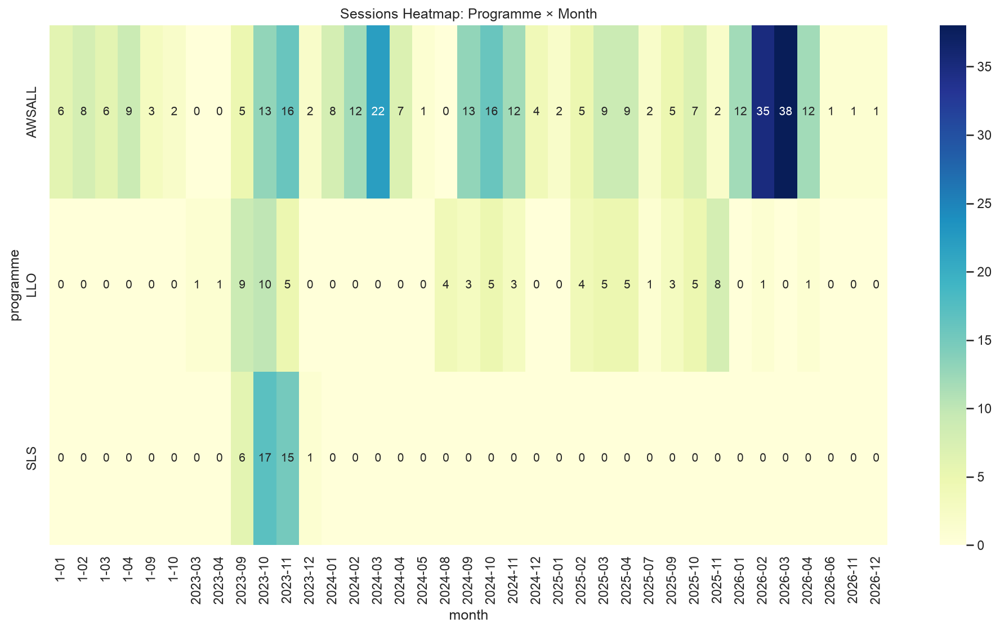
Sessions by Day of Week
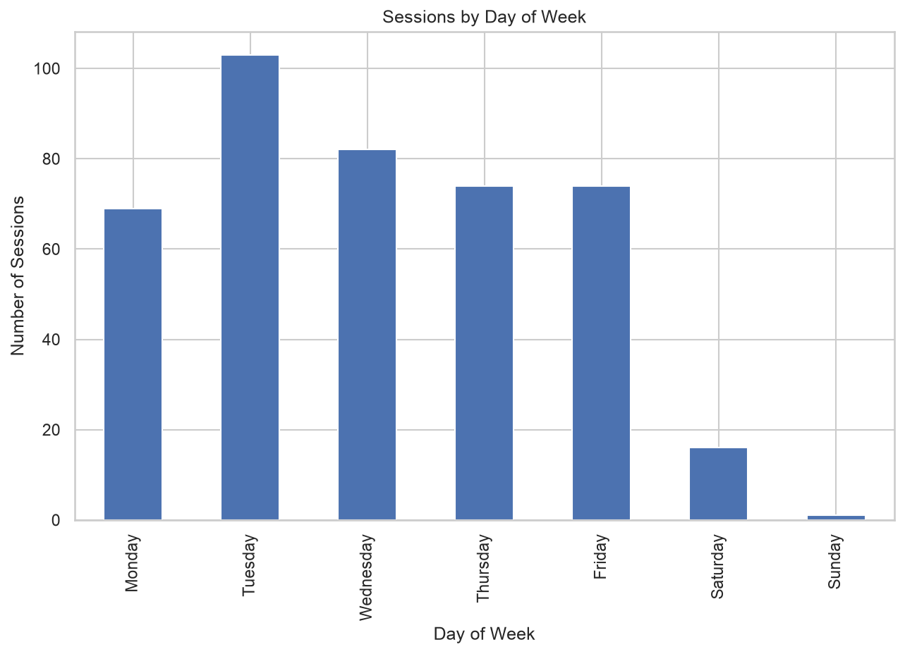
Teacher-led Sessions by Programme and Academic Year
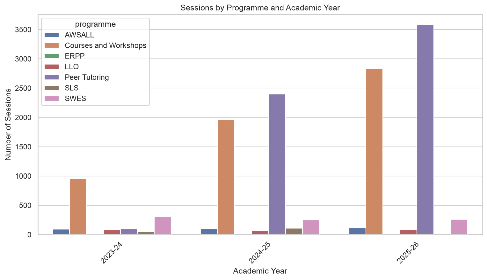
Unique Students by Programme
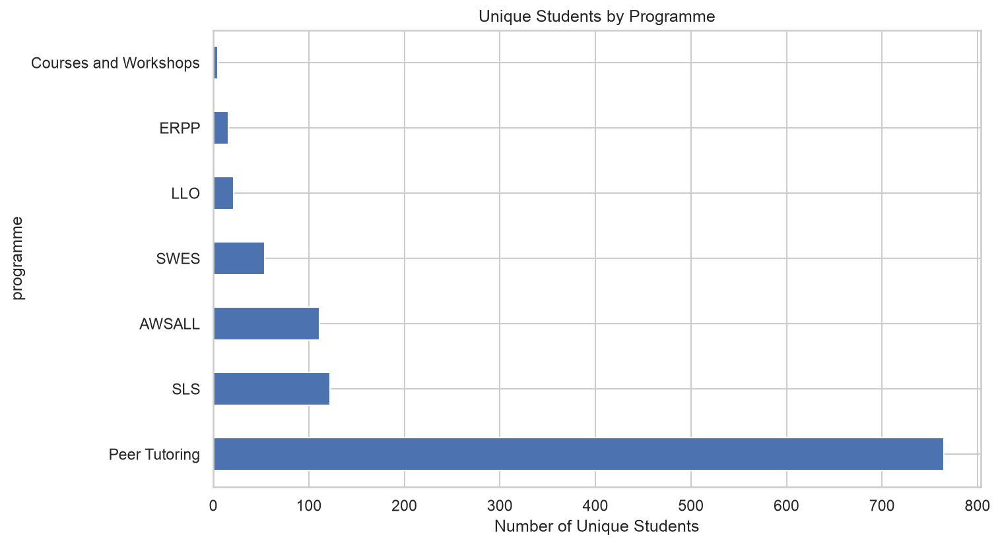
Total Service Hours by Programme
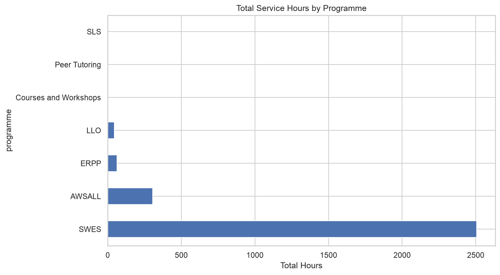
Top Teachers/Tutors by Sessions
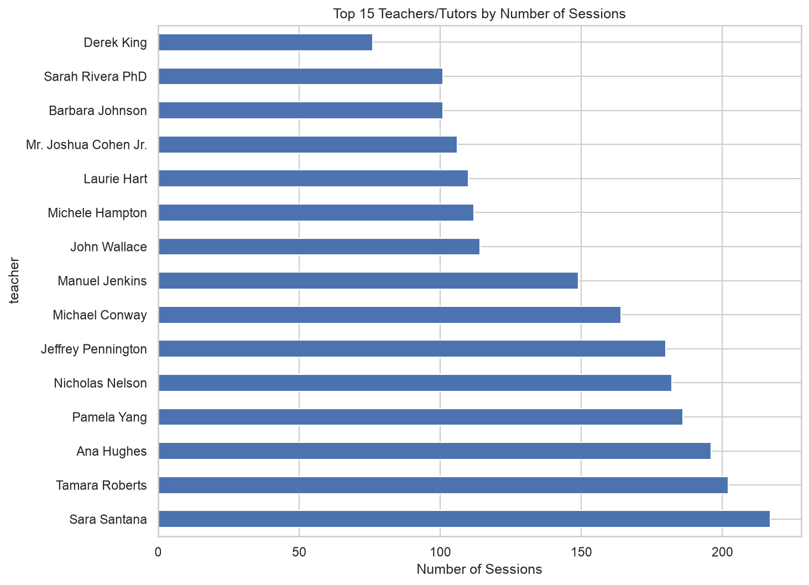
Sessions per Student
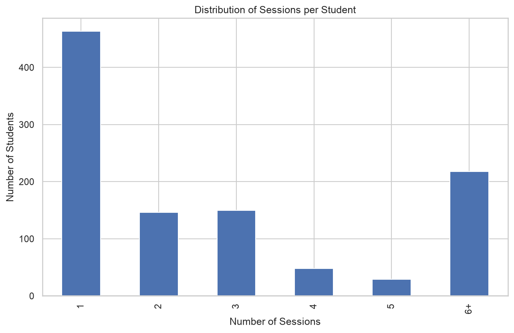
Distribution by Year of Study
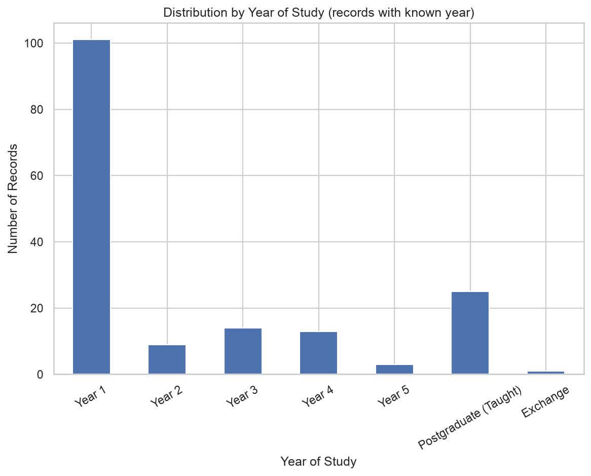
Data gap: student background information (faculty, major, year of study)
is currently collected only for a small subset of programmes (mainly SLS). To enable
granular analysis of who uses LC services — e.g. participation by faculty or year of
study — attendance forms should capture these fields consistently across all programmes.